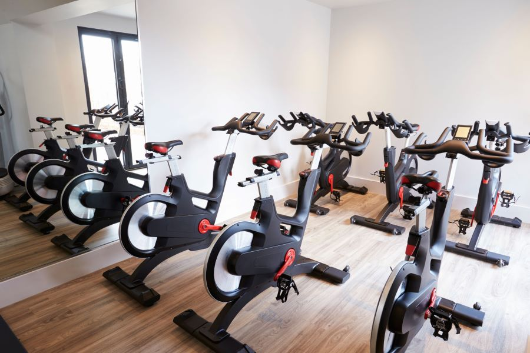

Nuestras Actividades
Musculacion
La musculación es una disciplina dedicada al desarrollo y fortalecimiento del tejido muscular, con el objetivo de mejorar la fuerza, resistencia y apariencia física.
Este enfoque de entrenamiento se centra en el levantamiento de pesas y la realización de ejercicios específicos diseñados para trabajar distintos grupos musculares.
Lunes a Viernes
08:00hs hasta 13:00hs // 15:00hs hasta 21:00hs
Inside Bike
Una "inside bike" se refiere a una bicicleta de ejercicio diseñada para su uso en interiores. Estas bicicletas están especialmente diseñadas para proporcionar una experiencia de ciclismo eficiente y cómoda dentro de la comodidad de un espacio cerrado.
Lunes, Miercoles, Viernes
09:00hs a 10:15hs // 19:00hs a 20:15hs
